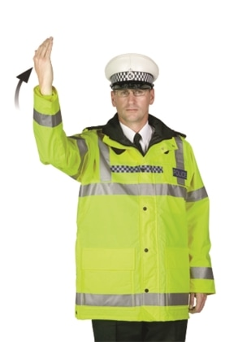
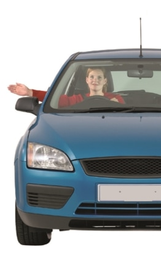

Signs and Signals > Signals by authorised persons
Signals used by authorised persons, including police officers, arm signals to persons controlling traffic, Driver and Vehicle Standards Agency officers and traffic officers and school crossing patrols.
Police officers
Police officers
Stop

Traffic approaching from the front

Traffic approaching from both front and behind

Traffic approaching from behind
To beckon traffic on

From the side

From the front

From behind
In Wales, bilingual signs appear on emergency services vehicles and clothing.
Arm signals to persons controlling traffic

I want to go straight on

I want to turn left; use either hand

I want to turn right
Driver and Vehicle Standards Agency officers and traffic officers

Traffic officer

DVSA officer
These officers have the powers to stop/direct vehicles and are using hand signals and light signals similar to those used by police. You must obey any signals given.
School crossing patrols

Not ready to cross pedestrians


Ready to cross pedestrians, vehicles must be prepared to stop

All vehicles must stop